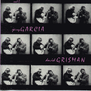
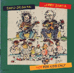

- ALMOST ACOUSTIC (1989)
Grateful Dead Records: GDCD4049
- Garcia, Jerry--guitar/vocals
- Nelson, David--guitar/vocals
- Rothman, Sandy--mandolin/dobro/fiddle
- Kahn, John--bass
- Kosek, Ken
- Kemper, David
Tracks: - "Swing Low, Sweet Chariot"
- "Deep Elem Blues"
- "Blue Yodel #9"
- "Spike Driver's Blues"
- "I've Been All Around This World"
- "Here To Get My Baby Out of Jail"
- "I'm Troubled"
- "Oh, the Wind and Rain"
- "Girl at the Crossroads Bar"
- "Oh, Babe, it Ain't No Lie"
- "Casey Jones"
- "Diamond Joe"
- "Gone Home"
- "Ripple": m: Garcia; w: Hunter
- CATS UNDER THE STARS (April, 1978)
All-Music Guide entry
- LP: Arista: AB4160
- CD: Arista: ARCD8535
The Jerry Garcia Band- Jerry Garcia--Vocals, guitar
- Keith Godchaux--Vocals, keyboards
- Donna Godchaux--Vocals
- John Kahn--Basses, keyboards, guitars; orchestration
- Ron Tutt--Drums, percussion
- Merl Saunders--Organ
- Maria Muldaur--Backup vocal on "Gomorrah" and "Love In theAfternoon"
- Steve Schuster--Flutes, clarinet, saxophone
- Brian and Candy Godchaux--Violins
Cover art: Kelley Mouse Studios
Tracks:
- "Rubin and Cherise": m: Garcia; w: Hunter
- "Love in the Afternoon": m: Kahn; w: Hunter
- "Palm Sunday": m: Garcia; w: Hunter
- "Cats Under the Stars": m: Garcia; w: Hunter
- "Rhapsody in Red": m: Garcia & Kahn; w: Hunter
- "Rain": D. Godchaux
- "Down Home": Kahn
- "Gomorrah": m: Garcia; w: Hunter
- GARCIA (January, 1972)
Grateful Dead Merchandising entry: includes audio clips
- LP: Warner Bros: BS2582
- CD: Grateful Dead: GDCD 4003
"Produced by Bob and Betty with Ramrod and Billy Kreutzmann"
"With Billy Kreutzmann and Robert Hunter"
Cover photo and album design by Bob Seidemann
Tracks:
(All songs by Garcia & Hunter)
- "Deal"
- "Bird Song"
- "Sugaree"
- "Loser"
- "Late For Supper"
- "Spidergawd"
- "Eep Hour"
- "To Lay Me Down"
- "An Odd Little Place"
- "The Wheel"
- GARCIA [aka COMPLIMENTS OF GARCIA] (June 21, 1974)
- LP: Round Records: RX-102
- CD: Grateful Dead: GDCD4009
Produced by John Kahn
Cover artwork: Victor Moscoso
Tracks:
- "Let It Rock": Chuck Berry
- "When the Hunter Gets Captured by the Game": W. Robinson
- "That's What Love Will Make You Do": Henderson Thigpen, JamesBanks & Eddy Marion
- "Russian Lullaby": Irving Berlin
- "Turn On the Bright Lights": Albert Washington
- "He Ain't Give You None": Van Morrison
- "What Goes Around": Mac Rebbenack
- "Let's Spend the Night Together": Mick Jagger & KeithRichards
- "Mississippi Moon": Peter Rowan
- "Midnight Town": m: John Kahn; w: Hunter
- HOOTERROLL?
All-Music Guide entry
notes from Ihor Slabicky's discography:
Hooteroll? - Howard Wales & Jerry Garcia (Douglas/Columbia KZ 30859) released in November, 1971. Howard Wales had also played with the group A. B. Skhy.Hooteroll? - Howard Wales & Jerry Garcia (Rykodisc RALP 0052) This 1988 reissue has a different back cover and contains "Morning In Marin" (6:59) and "Evening In Marin" (4:09) (an alternate take of "Up From The Desert"), two songs which are not on the original Douglas album. Also released on CD as RCD 10052.
- HOW SWEET IT IS (April 1997)
Arista/Grateful Dead Records: GDCD4051
Recorded at the Warfield, 1990
Produced by John Cutler and Steve Parish
Photography: Ken Friedman; cover photo by Mike Conway; design: Gecko Graphics
Liner notes: Steve Silberman
The Jerry Garcia Band:
- Melvin Seals
- Gloria Jones
- Jackie LaBranch
- David Kemper
- John Kahn
- Jerry Garcia
Tracks:
- "How Sweet It Is (To Be Loved By You)": Holland, Dozier
- "Tough Mama": Dylan
- "That's What Love Will Make You Do": Thigpen, Banks, Marion
- "Someday Baby": Hopkins
- "Cats Under the Stars": Garcia, Hunter
- "Tears of Rage": Dylan
- "Think": McKracklin
- "Gomorrah": Garcia, Hunter
- "Tore Up Over You": Ballard
- "Like A Road": Nix, Penn
- JERRY GARCIA BAND (1991)
All-Music Guide entry
Arista: 18690-2
Produced by Jerry Garcia, John Kahn, and John Cutler
"Recorded Live"
- Jerry Garcia--Guitar & vocals
- John Kahn--Bass guitar
- Melvin Seals--Organ and keyboards
- David Kemper--Drums
- Jackie LaBranch--Background vocals
- Gloria Jones--Background vocals
Cover art: John Kahn; photography: Ken Friedman
Tracks:
- CD one:
- "The Way You Do the Things You Do:: William Robisnon, Jr. andRobert Rogers
- "Waiting For a Miracle": Bruce Cockburn
- "Simple Twist of Fate": Bob Dylan
- "Get Out Of My Life": Allen Toussaint
- "My Sisters and Brothers": Charles Johnson
- "I Shall Be Released": Dylan
- "Dear Prudence": Lennon & McCartney
- "Deal": m: Garcia; w: Hunter
- CD two:
- "Stop That Train": Peter Tosh
- "Senor (Tales of Yankee Power)": Dylan
- "Evangeline": David Hidalgo & Louis Perez
- "The Night They Drove Old Dixie Down": J. R. Robertson
- "Don't Let Go": Jesse Stone
- "That Lucky Old Sun": Haven Gillespie & Beasley Smith
- "Tangled Up In Blue": Dylan

- JERRY GARCIA / DAVID GRISMAN (1991)
Article from Guitar Extra
Article from Mix Magazine
Acoustic Disc's page, with sound sample
All-Music Guide entry
Acoustic Disc: ACD-2
Produced by Jerry Garcia and David Grisman
Cover design by David Grisman and Django Bayless; photography byGary Nichols
Tracks:
- "The Thrill Is Gone": Hawkins-Darnell
- "Grateful Dawg": Garcia-Grisman
- "Two Soldiers": trad; arr. Garcia-Grisman
- "Friend of the Devil": m: John Dawson and Garcia; w: Hunter
- "Russina Lullaby": Irving Berlin
- "Dawg's Waltz": Grisman
- "Walkin' Boss": trad.; arr. Garcia-Grisman
- "Rockin' Chair": Hoagy Carmichael
- "Arabia": Grisman (Middle part based on the Cuban folk theme,"Hasta Siempre")
- LIVE AT THE KEYSTONE, VOL. 1
All-Music Guide entry

- NOT FOR KIDS ONLY (1993)
Acoustic Disc: ACD-9
Produced by David Grisman
- Jerry Garcia--Vocals, guitar
- David Grisman--Vocals, mandolin, tenor banjo, mando-cello,string arrangement
- Hal Blaine--Tambourine, percussion
- Larry Hanks--Jew's harp
- Joe Craven--Percussion, fiddle, happy feet
- Matt Eakle--Piccolo, pennywhistle
- Will Scarlett--Harmonica
- Jody Stecher--Vocal, fiddle
- Rick Montgomery--Rhythm guitar
- Jim Kerwin--Bass
- Peter Welker--Trumpet
- Jim Rothermel--Clarinet
- Kevin Porter--Trombone
- Jim Miller--Slap
- John Rosenberg--Piano
- Dan Kobialka--Violin
- Chun Ming Mo--Violin
- Heather Katz--Violin
- Nancy Severance--Viola
- Larry Granger--Cello
- Pamela Lanford--Oboe, English horn
Artwork: Jerry Garcia; Photography: Susana Millman
Tracks: (all songs traditional except "Freight Train", by ElizabethCotten)
- "Jenny Jenkins"
- "Freight Train"
- "A Horse Named Bill"
- "Three Men Went A-Hunting"
- "When First Unto This Country"
- "Arkansas Traveler"
- "Hopalong Peter"
- "Teddy Bears' Picnic"
- "There Ain't No Bugs On Me"
- "The Miller's Will"
- "Hot Corn, Cold Corn"
- "A Shenandoah Lullaby"
- OLD AND IN THE WAY (1975)
- Round Records: RX 103
- Rykodisc:
Musicians:
- Vassar Clements: fiddle
- Jerry Garcia: banjo
- David Grisman: mandolin
- John Kahn: bass
- Peter Rowan: guitar
Tracks:
- "Pig In A Pen": trad.
- "Midnight Moonlight": Peter Rowan
- "Old and In the Way": David Grisman
- "Knockin' On Your Door":
- "The Hobo Song":
- "Panama Red": Peter Rowan
- "Wild Horses": Jagger/Richards
- "Kissimmee Kid": Vassar Clements
- "White Dove":
- "Land of the Navajo": Peter Rowan
- REFLECTIONS (January, 1976)
- LP: Round Records: RX-LA565-G/107
- 8 Track: Round Records: RX-EA565-H
- Cassette: Round Records: RX-CA565-H
- CD: Grateful Dead Records: GDCD4008
Engineer: Dan Healy
- Jerry Garcia--Lead guitar, rhythm guitar, bells, acousticguitar, synthesizer, organ, chimes, percussion, vocals
- Bob Weir--Second guitar, vocals
- Phil Lesh--Bass
- Keith Godchaux--Fender Rhodes, piano, tack piano
- Donna Godchaux--Harmony vocals
- Bill Kreutzmann--Drums
- Mickey Hart--Drums, percussion, box, fire extinguisher
- Nicky Hopkins--Piano
- John Kahn--Bass, organ, vibes, clavinet, synthesizer
- Ron Tutt--Drums
- Larry Knechtel--Piano
Cover illustration: Mike Steirnagle
Tracks:
- "Might As Well": m: Garcia; w: Hunter
- "Mission in the Rain": m: Garcia; w: Hunter
- "They Love Each Other": m: Garcia; w: Hunter
- "I'll Take a Melody": Allen Toussaint
- "It Must Have Been the Roses": w & m: Hunter
- "Tore Up Over You": Hank Ballard
- "Catfish John": Bob McDill & Allen Reynolds
- "Comes a Time": m: Garcia; w: Hunter
- RUN FOR THE ROSES (1982)
All-Music Guide entry
Arista: BMG/ARISTA 7822 8557 4
- Kahn, John--bass
- Neuman, Roger--trumpet
- Omartian, Michael--keyboards
- Saunders, Merl--keyboards
- Seals, Melvin--organ
- Stafford, Julie--vocals
- Stires, Liza--vocals
- Tutt, Ron--drums
- Warren, James--piano
- Garcia, Jerry--guitar/vocals
Artwork by Victor Moscoso
Tracks:
- "Run for the Roses": m: Garcia; w: Hunter
- "I Saw Her Standing There": Lennon & McCartney
- "Without Love":
- "Midnight Getaway": m: Garcia; w: Hunter
- "Leave the Little Girl Alone": m: Garcia; w: Hunter
- "Valerie": m: Garcia; w: Hunter
- "Knockin' on Heaven's Door": Dylan
- THAT HIGH LONESOME SOUND: Old and In the Way (1996)
Ryan Shriver's Old & in the Way site
Acoustic Disc: ACD-19
"Original Live Recordings From 1973--Vol. 1"
"Recorded live at The Boarding House, San Francisco, October 1973 by Owsley Stanley & Victoria Babcock.
Produced by David Grisman
Notes by Neil Rosenberg and Richard Loren
Cover and center photography by Nobuharu Komoriya
Musicians:
- Vassar Clements
- Jerry Garcia
- David Grisman
- John Kahn
- Peter Rowan
Tracks:
- "Hard Hearted": Jim and Jesse McReynolds
- "The Great Pretender": Buck Ram
- "Lost": Buzz Busby and Cindy Davis
- "Catfish John": Bob McDill and Alan Reynolds
- "High Lonesome Sound": Peter Rowan
- "Lonesome Fiddle Blues": Vassar Clements
- "Love Please Come Home": E. ("Leon") Jackson
- "Wicked Path of Sin": Bill Monroe
- "Uncle Pen": Bill Monroe
- "I'm On My Way Back to the Old Home": Bill Monroe
- "Lonesome L.A. Cowboy": Peter Rowan
- "I Ain't Broke But I'm Badly Bent": H. Payne
- "Orange Blossom Special": Ervin Rouse
- "Angel Band": Jefferson Hascall and W.B. Bradbury